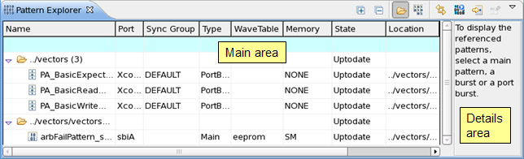

Pattern Explorer
With the Pattern Explorer you can:
- explore the patterns contained in the loaded setup,
- create new patterns, port bursts, and multiport bursts,
- delete patterns,
- load and save selected patterns (see note below),
- start pattern editors and multiport burst editors,
- edit bursts.Note Loading and saving selected patterns requires that they were loaded via a pattern master file. This feature is not available for standard pattern setup files.
The Pattern Explorer consists of two areas: the main area and the details area. The main area lists all patterns of the loaded setup file. The content of the details area is context sensitive and depends on the selection in the main area. When there is nothing to display, it shows an instruction message.
The status line at the bottom shows the selected item, the row number and the total number of rows.
The figure below shows a pattern master file in the folder-oriented view mode.

Icons
The toolbar of the Pattern Explorer contains the following icons:
Toolbar icons |
|
|---|---|

|
Link with Editor: Toggles whether the Pattern Explorer selection is linked to the active editor. When this option is selected, changing the active editor will automatically update the Pattern Explorer selection to the resource being edited. |

|
Show Executed Pattern: Highlights the last executed pattern. |
Go to Row (Ctrl + L): Allows to jump to a specific row in the Pattern Explorer. |
|

|
Pin Details Area: Locks the details area, when the selection in the main area is changed. Useful when editing bursts. |

|
View Menu: Provides menu items for changing the layout and preferences: Layout
Show in Hierarchy
Preferences
|
The icons below are active for pattern master files (*.pmfl) only. |
|
Show Folder in Hierarchy: Toggles between folder/file-oriented view mode and pattern-oriented view mode. |
|
Show Multiport Burst in Hierarchy: Toggles the display of the multiport burst hierarchy. |
|
Expand All: Expands the Pattern Explorer's hierarchy. |
|
Collapse All: Collapses the Pattern Explorer's hierarchy. |
|
In the main area of the Pattern Explorer the following icons indicate the state of folders, patterns, and port bursts:
Main area icons |
|
|---|---|
A folder. |
|
A modified folder. |
|
A pattern. |
|
An initialized, but not loaded pattern (icon, pattern name, etc. are grayed out.) |
|
A modified pattern. |
|
The current primary pattern. |
|
A port burst (type = PortBurst). |
|
A modified port burst. |
|
The current primary port burst. |
|
A multiport burst (type = MPBurst). |
|
A modified multiport burst. |
|
The current primary multiport burst. |
|
Status line
The status line at the bottom of the work center shows the selected item, the row number of the selected cell, and the total number of rows. For example, for a top most cell (below the filter cell) the row number indicator could show 1 / 200, that is row 1 of 200 rows in total. For a filter cell the status line would show Filter / 200.
Functional changes
- Introduced before SmarTest 6.3.2
- SmarTest 6.5.3: Additional view modes and load/save functionality for pattern master files.
- SmarTest 6.5.3: Additional columns: State and Location.
- SmarTest 6.5.3: Additional icons to indicate the pattern state.
- SmarTest 7.1.3: Additional icons and functions to support multiport bursts.